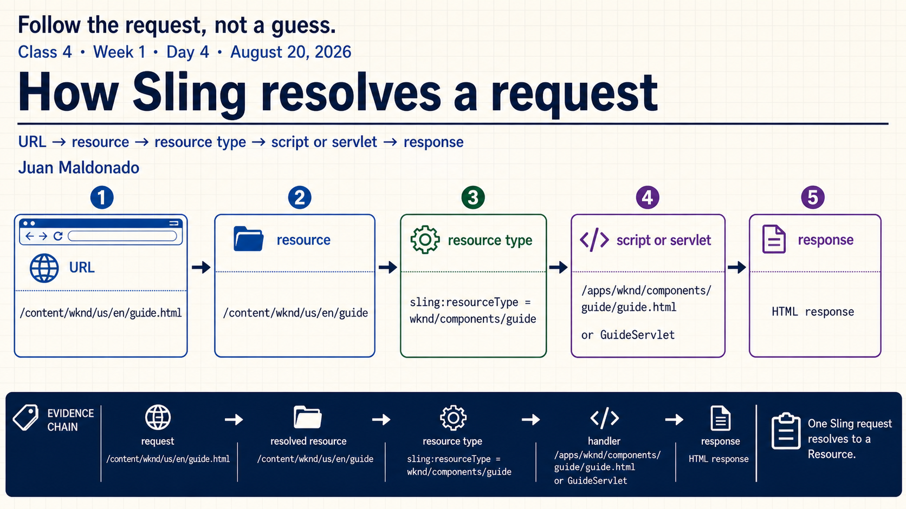
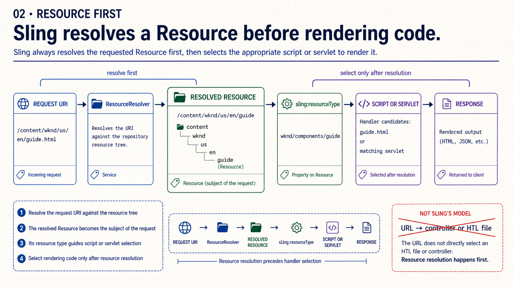
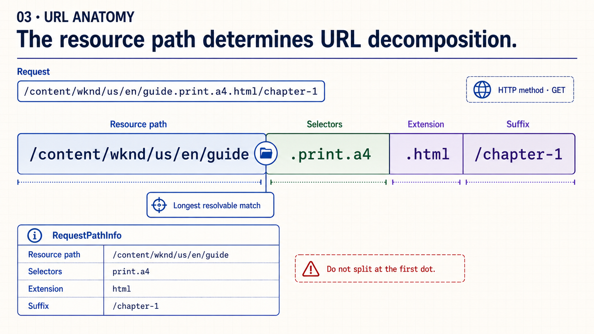
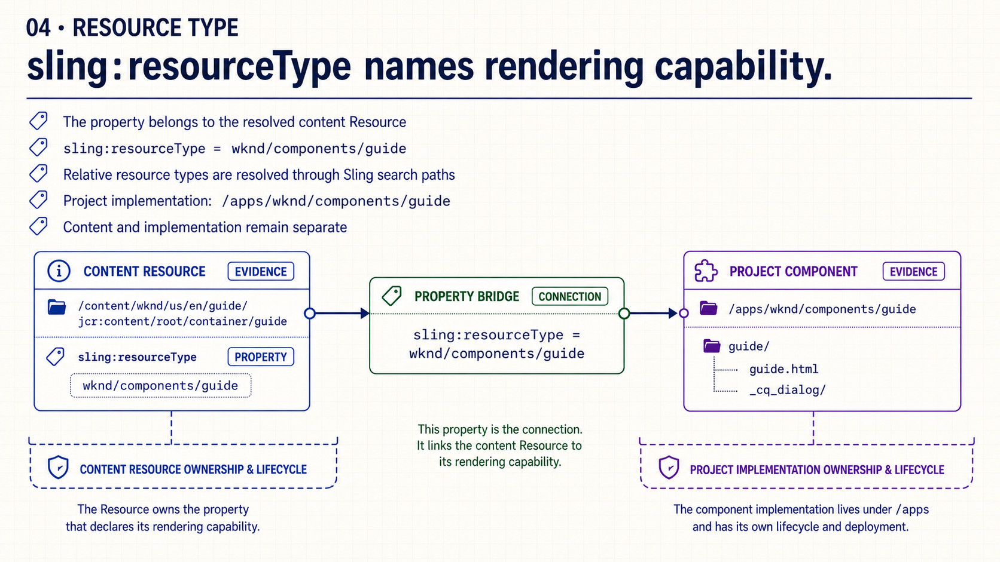
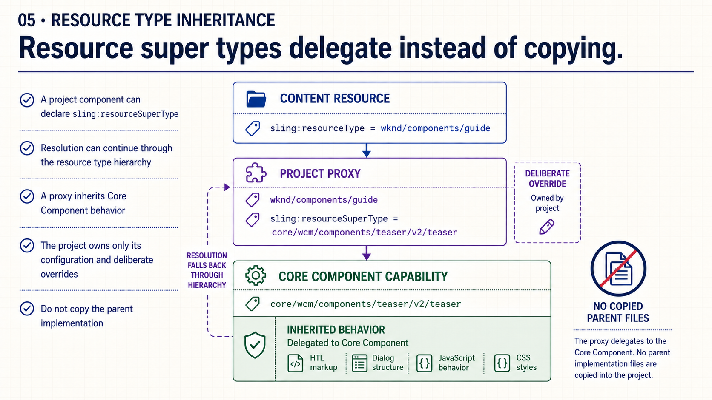
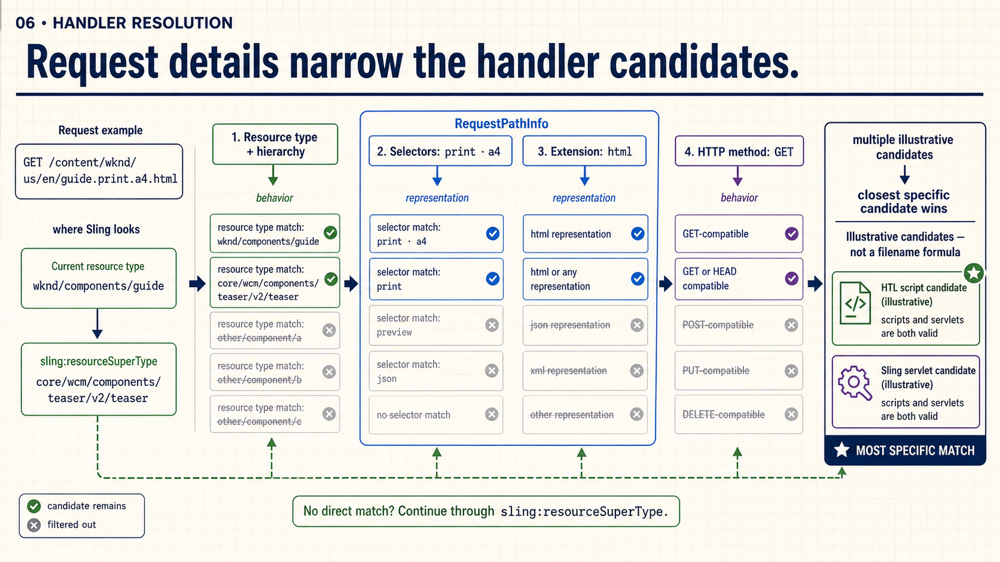
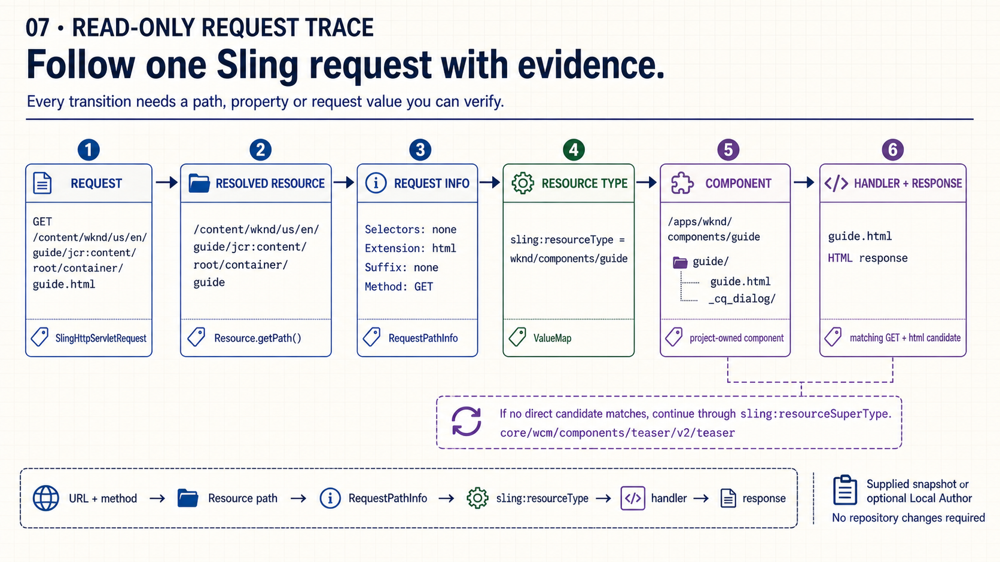
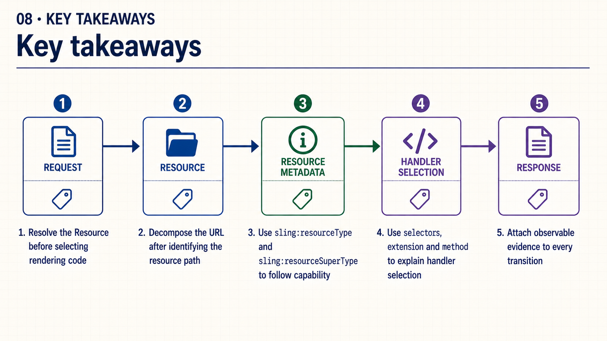
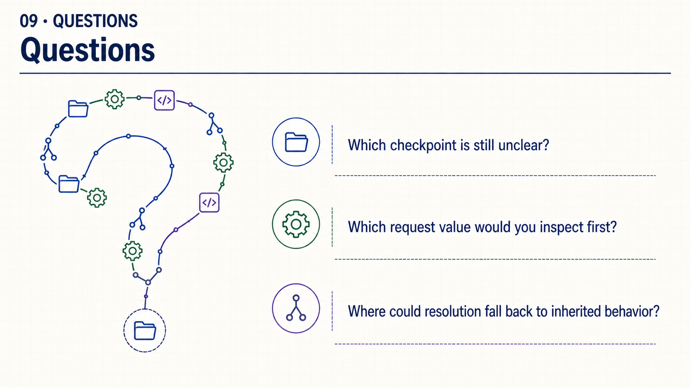

{kind=link}
Open: “Which checkpoint can you prove first from the request alone?”
Class 4 · Week 1 · Day 4 · August 20, 2026
Trace a Sling request from URL to resolved Resource, request information, resource type hierarchy, selected handler and response.
RequestPathInfo, sling:resourceType and any sling:resourceSuperType.sling:resourceType and sling:resourceSuperType through the resource type hierarchy;| Time | Activity | Facilitation |
|---|---|---|
| 0–3 | Retrieval | Ask: “What connects a content Resource to the component that renders it?” |
| 3–17 | Slides 1–6 | Build the resource-first model, URL anatomy, type hierarchy and handler selection. |
| 17–24 | Slide 7 | Trace one supplied read-only request using exact observable evidence. |
| 24–27 | Slide 8 | Retrieve the five checkpoints in order. |
| 27–30 | Slide 9 | Questions only; no live demonstration dependency. |
Choose Copy slide as image and paste it into PowerPoint, or download the PNG.

Open: “Which checkpoint can you prove first from the request alone?”

Emphasize: the URL does not directly name an HTL file.

Ask: “Where does the longest resolvable Resource path end?”

Say explicitly: the stored resource type is relative; it is not an absolute /apps path.

Emphasize: the proxy owns deliberate overrides and inherits the remaining capability.

Emphasize: scripts and servlets can both be valid candidates.

Trace: require one observable value at every arrow.

Key takeaways: retrieve the checkpoints in order and attach evidence to each transition.

Close: invite questions; do not depend on a live demonstration.
The complete talk track is available in speech.md.
sling:resourceType and any sling:resourceSuperType.Evidence: one annotated trace containing the exact request, Resource path, request information, resource type hierarchy, selected handler and response.
{kind=link}
{kind=link}
{kind=link}
{kind=link}
{kind=link}
{kind=link}
{kind=link}
{kind=link}